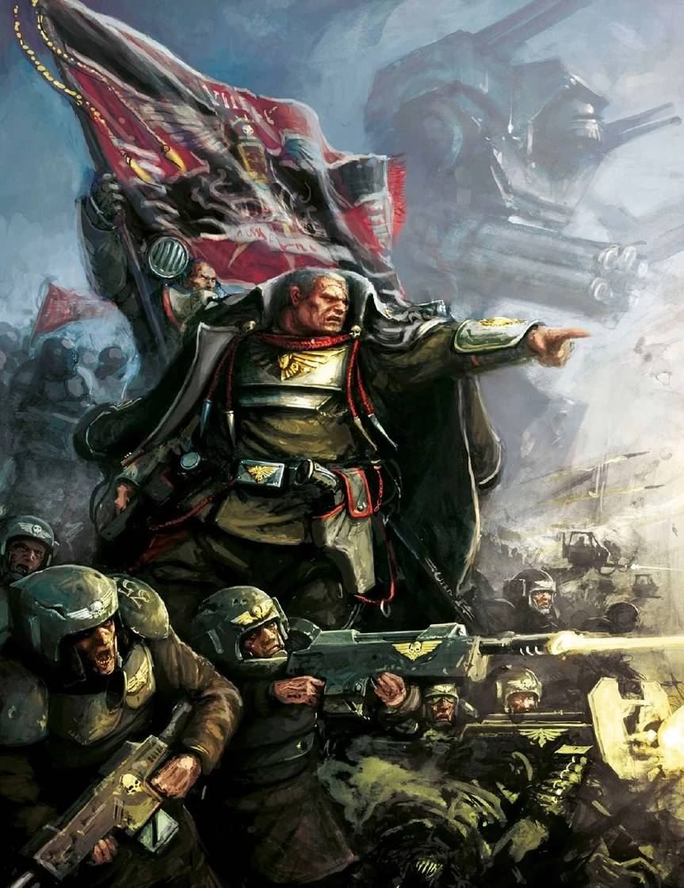

Ursarkar Creed
| Ursarkar E. Creed | |
|---|---|
| Lord Castellan of Cadia | |
 Creed directing Cadian troops, with Colour Sergeant Kell and the banner of the Castellan's Own | |
| Lord Castellan of Cadia | |
| Tenure | 999.M41 – fall of Cadia (999.M41) |
| Predecessor | Governor Primus Marius Porelska (as head of the Cadian command) |
| Colonel of the Cadian 8th | |
| Tenure | Before 999.M41 |
| Born | Cadia, c. 940s.M41 (estimated); found as an orphan in Kasr Gallan |
| Status | Missing since the destruction of Cadia (999.M41); unconfirmed reports of survival |
| Allegiance | Imperium of Mankind; Astra Militarum |
| Companion | Colour Sergeant Jarran Kell (died 999.M41) |
| Known for | The Battle of Tyrok Fields; the defence of Cadia in the Thirteenth Black Crusade |
Ursarkar E. Creed is a Cadian officer of the Astra Militarum who was Lord Castellan of Cadia during the Thirteenth Black Crusade in 999.M41. He was raised to command after traitor regiments murdered the Cadian high command at the Battle of Tyrok Fields, and he led the defence of Cadia against Abaddon the Despoiler until the planet was destroyed. He is recorded as missing, and his fate is not known.[1][2]
Creed was considered the most able Cadian commander of his generation, a strategist compared by his admirers to Macharius. He was rarely seen without his friend and bodyguard, Colour Sergeant Jarran Kell, who died to save him on the Elysion Fields.[1]
Early life
[edit]Creed was found as a boy by soldiers of the Cadian 8th Regiment in the burning ruins of Kasr Gallan after a Chaos raid. He was holding a service pistol and a torn copy of De Gloria Macharius, and refused to speak of what he had seen. He joined the Whiteshields, Cadia's youth corps, where he met Jarran Kell, and the two became lifelong friends. By the end of the five-year Drussite Crusade he was a captain and Kell his colour sergeant. He rose quickly, and by 992.M41 he was the most successful living Cadian commander, held back from higher office only by his unknown birth.[1][a]
Lord Castellan
[edit]Early in 999.M41, as the Thirteenth Black Crusade gathered, the traitor Volscani Cataphracts struck at a review on the Tyrok Fields and in the Excubitoi Castellum, killing Governor Primus Marius Porelska and much of the Cadian high command. Creed, then a colonel commanding the 8th, took control of the surviving troops and put down the revolt. His soldiers demanded that he lead them; after refusing three times he accepted the office of Lord Castellan. He promoted officers he trusted and dismissed those he did not, making many enemies in the Cadian officer class, and reorganised the defences of the Cadian Gate.[1][2]
Defence of Cadia
[edit]When Abaddon's fleets came out of the Eye of Terror, Creed commanded the defence of Cadia with forces that included Logan Grimnar's Space Wolves, Saint Celestine and the Archmagos Belisarius Cawl. He held Kasr Kraf and then moved the defence to the Elysion Fields, the largest cluster of Cadia's ancient pylons, which Cawl reactivated to shrink the Eye.[1]
Abaddon's Terminators then struck at Creed's command post on the Elysion Fields. Kell pushed the Lord Castellan into a Valkyrie and stayed behind. Abaddon lifted him by the throat; Kell spat in his face and said "Cadia stands" before the Warmaster killed him. When Abaddon dropped the wreck of a Blackstone Fortress onto the planet, Creed organised an evacuation that carried about three million people off Cadia before it broke apart. He was not among those who escaped.[1]
Fate
[edit]The Officio Militaris lists Creed as missing. No body was recovered, and the circumstances of his disappearance are not known. In the Era Indomitus, Cadian regiments of the diaspora have reported seeing him in command at the front, and some of their officers claim to have received his orders, but the Imperium has not confirmed that he is alive. Among the scattered Cadians he is treated as their commander in exile whatever the truth.[1][3][b]

Character
[edit]Creed was silent and calculating where Kell was loud, and he rarely spoke of himself. He was famous for his trust in the common soldier and his disdain for officers who owed their rank to birth, and for the mantra that became the motto of the Cadian defence: "Cadia stands".[1]
Timeline
[edit]| Date | Event |
|---|---|
| c. 940s.M41 (estimated) | Born on Cadia; found as an orphan in Kasr Gallan |
| Before 992.M41 | The Drussite Crusade; captain of the 8th |
| 992.M41 | Most successful living Cadian commander |
| 999.M41 | Battle of Tyrok Fields; named Lord Castellan |
| 999.M41 | Defence of Kasr Kraf and the Elysion Fields; death of Kell; fall of Cadia; Creed missing |
| Early M42 | Unconfirmed reports of Creed among the Cadian diaspora |